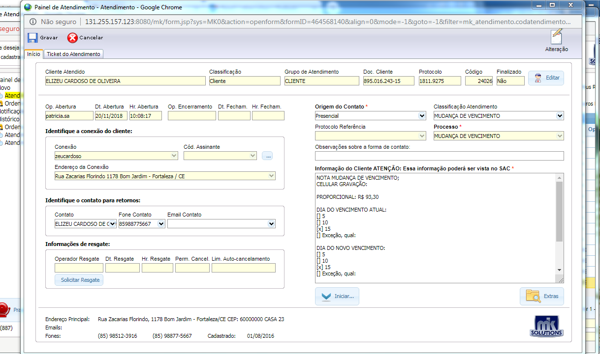
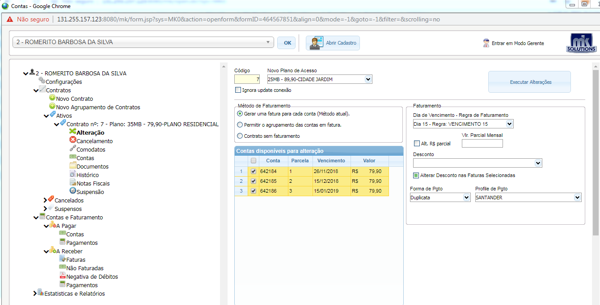
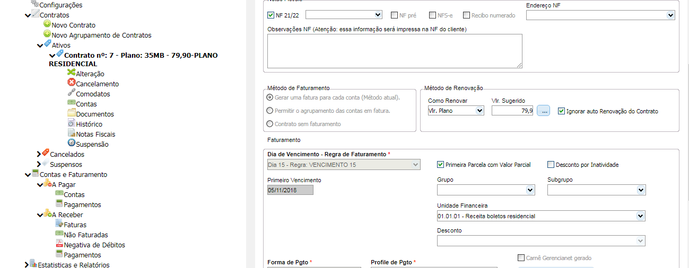
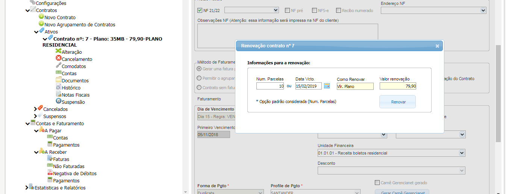
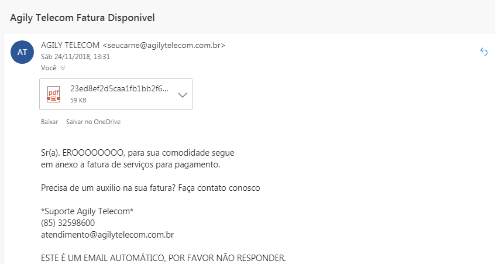
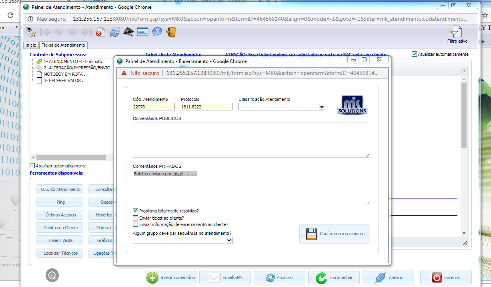
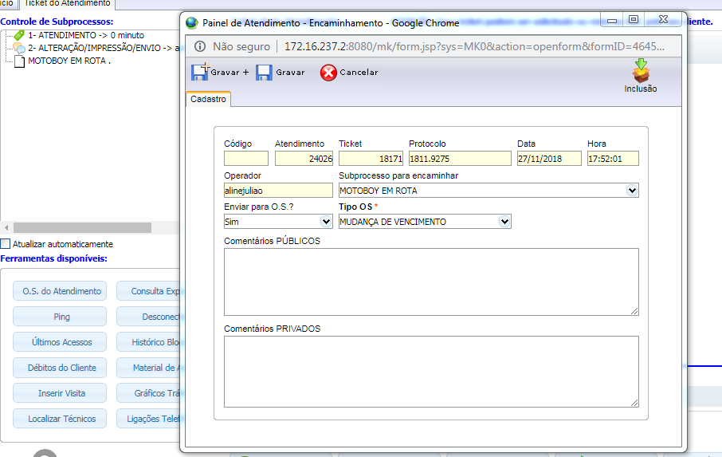
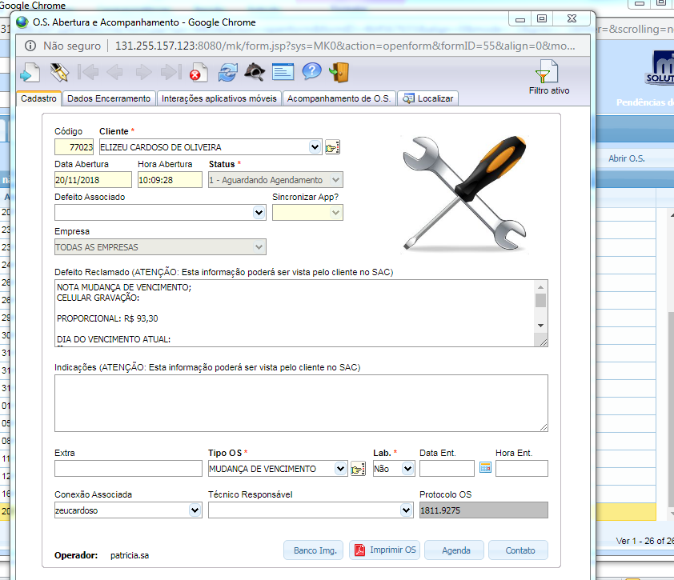
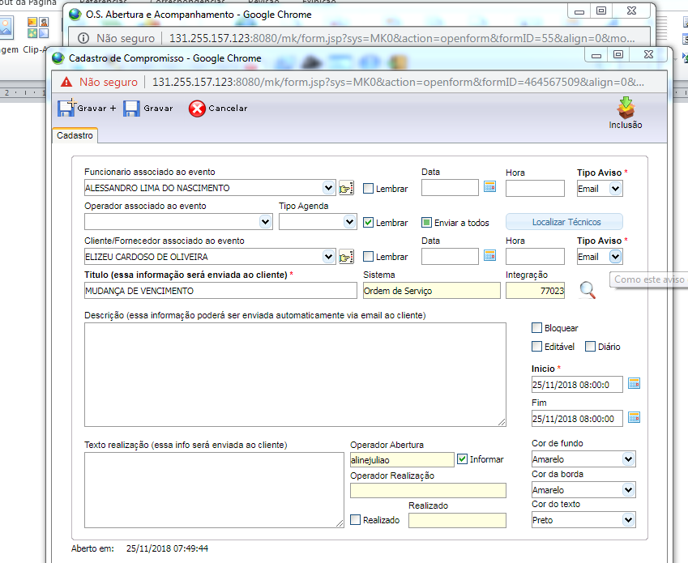
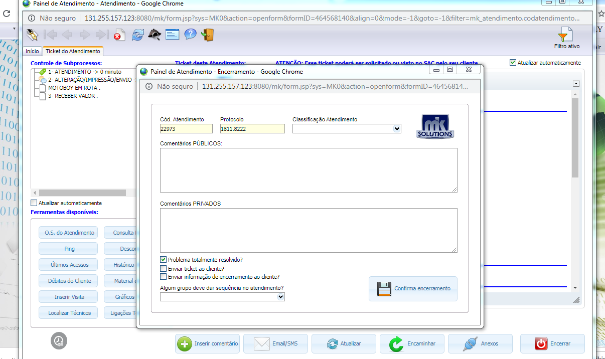

Voltar
Voltar
Mudança de vencimento
- Financeiro Agily Telecom (nome + comprimentos)
- Confirmar as informações cadastrais
- Qual o nome do titular do contrato?
- Acessar o mk Solutions a aba, Suporte / Painel de atendimento e serviço/ painel de atendimento
- Na aba Código/ Nome; informar o nome do titular e clicar ok
- Clicar na aba cadastro e confirmar os dados

- Qual Endereço e cep ?
- telefones para contato ( Obs.: Atualizar os números )
- Qual watsap ?
- Qual o e-mail ? (Obs.: Atualizar e-mail ou colocar não tem)

Mudança de vencimento
Fazer as seguintes verificações:
- Verificar se tem ticket aberto para esse cliente; Na aba painel de atendimento/ Atendimento/ histórico /Atendimento.
- Verificar se tem O.S aberta para esse cliente; Na aba painel de atendimento/ Atendimento/ histórico /Ordens de serviço.
No caso de O.S aberta informar ao cliente para aguardar atendimento.
- Verificar pendências financeiras: Na aba Financeiro / Painel Contas e faturamentos
No casso de pendencias informar o cliente, que a alteração só poderá ser feita após o pagamento do debito e com o titular.
Importante: A alteração do vencimento só poderá ser feita após 1 dia subsequente do vencimento atual e a parcela já deve esta liquidada.
Verificar com o cliente qual a data que ele deseja mudar, Fazer o calculo da proporcionalidade e informa-lo antes de continuar com a solicitação.
Datas Vencimento: 05,10,15 e 20
Abertura do ticket:
Após essas verificações, selecionar a aba novo e preencher os campos no painel de atendimento:
Origem do contato= telefônico
Processo = Mudança de vencimento
Informação do cliente= Relatar a solicitação do cliente, o plano de acesso, valor e forma de envio Gravar e Iniciar.
- Encaminhar o ticket para o sub processo Executar/Alteração/Impressão/Envio

- Finalizar o atendimento e Informar ao cliente que será feito envio do boleto por e-mail.
Mudança de Vencimento
-
Acessar o financeiro, contas e faturamento, Painel de contas e Faturamento.
Pesquisar pelo nome do cliente e da Ok.
(Antes de Iniciar o processo de alteração, desmarcar da fatura os campos remessa e cancelar a Nf)
Seleciona o campo Ativos e clica na opção Alteração.
-
No campo Faturamento seleciona a regra de Faturamento, seleciona o vencimento solicitado pelo cliente, marca o opção Alt. R$ Parcial e clica em executar Alterações.

Fazer o calculo de proporcionalidade da primeira parcela, considerando os dias do novo vencimento.
Acessa o contrato do cliente para fazer a inclusão de mais parcelas para completar as 12 laminas

Seleciona o campo método de Renovação, clica nos ( ...)
Voltar
Preenche os campos Num. Parcelas de acordo com a quantidade para completar as 12. Na data Vcto coloca a data posterior ao ultimo vencimento já emitido e clica em Renovar.

Procedimentos de envio por e-mail
- Acessar o cadastro do cliente e no campo e-mail, marca a opção aceita \ SMS e grava
- Em seguida seleciona as faturas alteradas e clica na opção e-mail ,conta e-mail Envio de carne , modelo de e-mail Fatura boleto automático e Enviar Duplicata.

O e-mail sera enviado para o cliente com essa Informação.

Encerrar o ticket
- Na aba painel de atendimento/ Seleciona a aba Ticket de atendimento, clica em encerrar e coloca o comentário do atendimento em comentários públicos e Confirmar o encerramento.

Procedimentos de envio por motoqueiro
Seleciona as faturas alteradas, clica na opção PDF ,baixa e imprimi.
Faz a impressão do boleto

Encaminhar o Ticket para O.S,
- No painel de atendimento clicar na aba editar/Ticket de atendimento / Encaminhar / Enviar para O.S sim/ Tipo de O.S Mudança de vencimento e Gravar

- Preencher as seguintes informações: em defeito reclamado/ Relatar a solicitação do cliente com o novo vencimento,taxa de Entrega R$ 5,00,prazo de 24hs,cliente ciente que deve entregar o antigo carne ao motoqueiro, tipo de O.S / Mudança de vencimento, Data Ent/ atual , Hora Ent / atual e Gravar

Fazer a impressão da O.S e anexar ao carnê impresso.
Fazer o agendamento
- Em funcionário Associado ao evento/ nome do Técnico, em Titulo/ apagar o nome do cliente e colocar a descrição/ Mudança de Vencimento/ Desmarcar os campos bloquear e Editável, Inicio / data e hora atual, Cor fundo e borda/ Amarelo, cor de texto/ preto e gravar

Encerrar ticket
- Na aba painel de atendimento/ Seleciona a aba Ticket de atendimento, clica em encerrar, coloca o comentário do atendimento em comentários públicos e Confirmar o encerramento.
